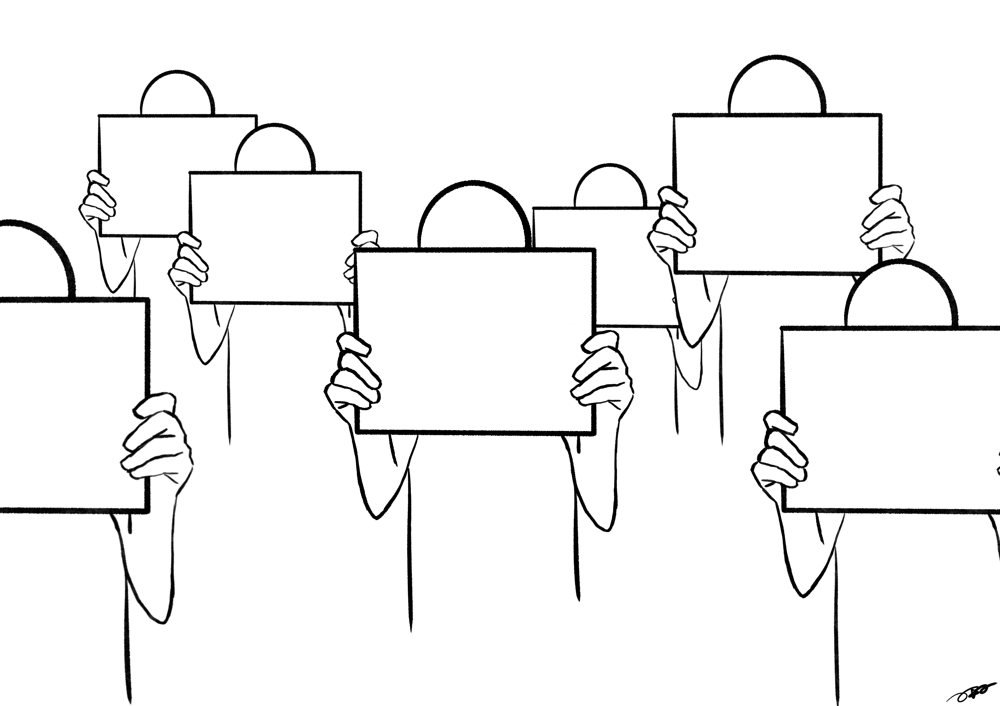
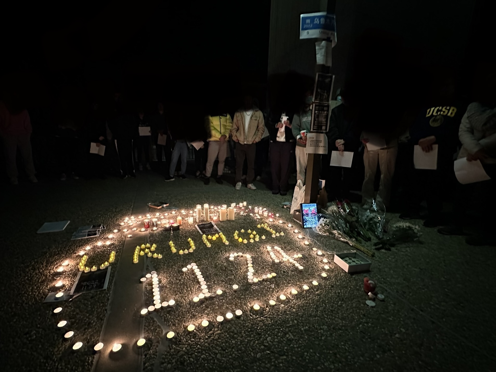

A4 Revolution
An activity that peacefully expresses Chinese people’s wishes for liberty.
"Give me Liberty, or give me death!" "不自由，毋宁死！"
About A4 Revolution
"A4 Revolution" is a censored topic in China right now. Because of the extremely strict zero-COVID policy, people lived in misery (such as starving, being forced into isolation, or even losing their lives).
An apartment building fire occurred on November 24, 2022, in Ürümqi, Xinjiang, China. Ten individuals were killed and nine others were injured because the building's exits were closed in accordance with stringent COVID standards. Protests are sparked by this blaze in numerous major Chinese cities and among Chinese students and expatriates around the world.
Countless Chinese young people are holding an A4-size white paper and protesting in the street. However, quite a number of them got arrested and have not been released yet.
After changing the COVID regulation policy and opening the country, the CCP (Chinese Communist Party) tries to cover up the history just like they did in 1989 at Tiananmen Square. However, I believe every citizen has the right to know about the whole story, so a comprehensive website about it would be helpful.
Young Chinese are holding up white papers in the streets to demand freedom.
Chinese student community in University of California, Santa Barbara came together to mourn the loss of their countrymen in the Urumqi fire.
Timeline
October 12, 2022
A social activist with the pseudonym "Peng Zaizhou" hangs a series of banners in Beijing's Haidian District Sihong Bridge, igniting a wave of resistance both domestically and abroad. Banners: "Life NOT Zero-covid Policy, Freedom NOT Lockdown, Dignity NOT Lies, Reform Not Regression, Elections NOT Dictatorship, Citizens NOT Slaves." (“不要核酸要吃饭，不要封控要自由，不要慌言要尊严，不要文革要改革，不要领袖要选票，不做奴才做公民。”
October 16, 2022
On the day of the 20th National Congress of the Communist Party of China, French protesters hold a themed rally in central Paris titled "Chinese in France Welcome President Xi's Enthronement."
October 29, 2022
British protesters hold a rally in support of Peng Zaizhou in London's Trafalgar Square.
October 31, 2022
New York protesters hold a "Costume Big White" creative event during the Halloween parade in support of the Sihong Bridge warriors.
November 6, 2022
American protesters hold a rally in front of the Apple Store in Manhattan, New York, in response to the Zhengzhou Foxconn incident.
November 12, 2022
Chinese young people in Germany hold their first "MyDuty" protest rally in Berlin's Alexanderplatz.
November 26, 2022
A female student from Nanjing University of the Arts holds a blank sheet of A4 paper in protest on campus.
November 26, 2022
A large number of citizens in Shanghai gather on Urumqi Middle Road to mourn and protest, collectively shouting "Down with the Communist Party" for the first time since the 1989 Tiananmen Square protests.
November 27, 2022
After the Urumqi fire incident, Chinese protesters gather in front of the Chinese Consulates in San Francisco and Toronto to express their condolences and support.
November 27, 2022
After the Urumqi fire, Sydney, Adelaide, Brisbane, and Melbourne held the first candlelight vigil for the victims.
December 10, 2022
Local Chinese protesters and local socialist groups in Sydney call for attention to labor issues at the Zhengzhou Foxconn factory in front of the Apple Store.
Missing People
Many young people in China have been arrested for participating in the A4 Revolution. The Chinese government has never released the number of people arrested for participating in the protests. Many demonstrators have not yet been released. Each name represents not just an individual, but also a brave person who has sacrificed their freedom for the cause of liberty.
We, the concerned global citizens, request the Chinese government to release all the individuals arrested for participating in the A4 Revolution protests. We demand greater transparency regarding the events surrounding the A4 Revolution and the government's COVID-19 policies that have led to the suffering of numerous citizens.
We believe in the right to information, free speech, and the importance of preserving historical events for future generations. We hope that the Chinese government acknowledges these rights and considers our plea for openness and fairness.
The following is an incomplete list:
- (2022.11.27) Commemoration along the bank of Liangma River.
- (2022.11.28-12.05) First round of extensive police investigation (with phone calls, visits, calling parents/ company of attendees, detention in police station).
2022.12.18:
- Yang Liu (杨柳): Journalist, arrested at her residence in Beijing. Charged with gathering to disrupt public order.
- Liu Yang (刘阳): DIYed a T-shirt with White paper icon online. Arrested when the T-shirt arrived.
- Lin Yun (林昀): Musician, arrested with Yang Liu at their residence, temporarily released because he tested positive for Covid.
- Li Yuanjing (李元婧): Accountant, arrested at her residence in Beijing at 7am.
- Li Siqi (李思琪): Journalist, writer, arrested at her residence in Beijing.
- Lin Qian (林倩): Translator, didn't come to the commemoration, arrested with Li Yuanjing. Temporarily released because she tested positive for Covid.
2022.12.22:
- Li Feifei (李飞飞): Media worker, arrested at her residence in Beijing.
- Zhai Dengrui (翟登蕊): Teacher, arrested at her residence in Beijing at 7am.
2022.12.23:
- Cao Zhixin (曹芷馨): Editor, arrested by police from Beijing at her home in Hunan.
2022.12.27:
- Lin Yun (林昀): Arrested after recovering from Covid.
- Lin Qian (林倩): Arrested after recovering from Covid.
- Qin Ziyi (秦梓奕): Director and journalist, taken away from his home in Shenzhen at 10am.
2022.12.28:
- Chen Junhui (陈军辉): Artist, arrested after returning to Beijing.
2022.12.30:
- Jia Xinxu (贾新许): Lost contact, probably arrested.
2023.1.4:
- Bai Er (白洱): Owner of bar, arrested.
2023.1.5:
- Chen Huang & An Ni (陈晃 & 安妮): Did not attend the commemoration. Tried helping the people under arrest, but was taken away by the police, sent back to her home in Chongqing.
2023.1.6:
- Kong Che (孔澈): DJ / teacher, arrested at Sam.
- Xiao Shan (小山): Followed by police around 8 am, his electronics taken away. Lost contact since, could be arrested.
- Yaoyao (摇摇): DJ, arrested around 8am.
- Chao Ran / Cathy (超然): Financial worker, lost contact.
Share Your Artwork

Photo by B70
Photo by B70
Photo by B70
"無恥逼出無畏的人" by Ana Kin
"Dec 2022, New York" by Jaz
Photo by Jaz
Rooster Statement by JIALUN TONG
Artist's words:
For over a billion people, our first introduction to the map of our home country was also a vivid analogy - a rooster. A symbol deep-seated in our minds that conjure polarizing feelings of recognition and belonging today. Paper, one of the Four Great Inventions of China, occurred in Western Han Dynasty - one would imagine to be used to further one’s expression, and pass down legacies longer and larger than life.
Could our ancestors see how blank sheets of paper are being used today?
As words unsaid echo around the world, the explicit loudness of blank paper reminds us of the fire that ignited this movement, and the fireball that cannot be censored from darkness.
A Chinese proverb reads, “Paper cannot keep the fire wrapped”. No one can stop the dawn from breaking, even with all the roosters muffled. No one can stop the birth of a new day.
Wanna share yours? Submit your A4 artwork by clicking the button below, which will open a Google Form:
News & Resources
Chinese in Southern California are sympathetic, worried for protesters back home
The A4 Revolution in China, named after the size of printer paper held up at scattered protests against COVID-19 lockdowns, is not yet a sustained movement to overthrow the Communist Party, but may have long-term consequences for Chinese dissidents.
China’s Blank-Paper Protests Are Only a Beginning
The article discusses the recent protests that have broken out in China due to the frustration of people with the prolonged COVID-19 prevention measures in the country. Chinese immigrants in Southern California are following the developments with a mixture of sympathy and fear. While some expressed solidarity with the protesters, others were worried about their safety and expressed doubt about lasting change. The article also highlights the harshness of the implementation of pandemic measures and its impact on people's lives in China. Additionally, it sheds light on the government's response to the protests and the crackdown on dissent.
Memes, Puns and Blank Sheets of Paper: China’s Creative Acts of Protest
Over the past weekend, protests erupted in at least a dozen cities in China, sparked by anger over Covid restrictions. The protesters used various creative and subtle methods to communicate their frustration, including holding up blank sheets of white paper, which symbolized their voicelessness but also their power. The protests have been largely peaceful, but authorities have been trying to crack down on them. Despite attempts to censor the internet, photos and videos of the protests have gone viral outside of China, with the hashtag #A4Revolution trending on Twitter.
Sign Our Petition 📢
We, the concerned global citizens, request the Chinese government to release all the individuals arrested for participating in the A4 Revolution protests. We demand greater transparency regarding the events surrounding the A4 Revolution and the government's COVID-19 policies that have led to the suffering of numerous citizens.
We believe in the right to information, free speech, and the importance of preserving historical events for future generations. We hope that the Chinese government acknowledges these rights and considers our plea for openness and fairness.
🖊️ Wang from Beijing supports this.
🖊️ Mary from New York supports this.
🖊️ James from Los Angeles supports this.
🖊️ Li from Shanghai supports this.
🖊️ Zhang from Guangzhou supports this.
🖊️ Linda from Chicago supports this.
🖊️ 6 people have signed this petition and support this cause.